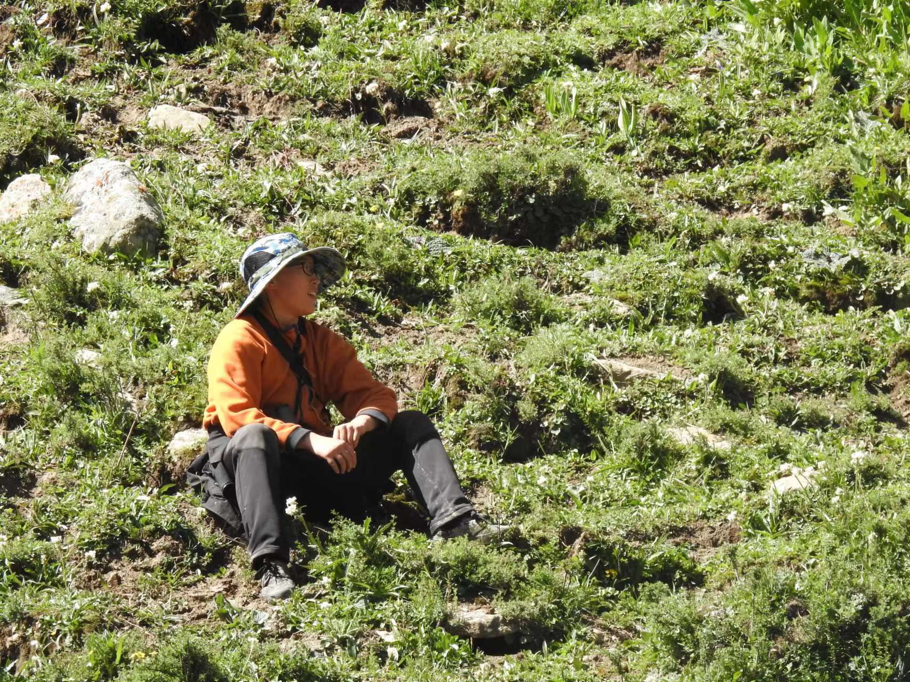

Yunfeng Ge
Hi Everyone! My name is Yunfeng Ge. I am a master student studying geospatial data science at the University of Hong Kong.
You can contact me at geyunfeng@connect.hku.hk. You can also reach me at +852 59570805 / +86 13698689898

My Education
- Master of Science in Geospatial Data Science, University of Hong Kong, 2024-2025
Related Coursework: Satellite Image Processing, Machine Learning in Geospatial Science, Drone Data Collection, GIS, Programming for Geospatial Analysis, Cloud Computing
- Bachelor of Arts in General Biology, Washington University in St. Louis, 2020-2024
Major in Biology (Ecology & Evolutionary Biology track) / Minor in Interdisciplinary Environmental Analysis
Overall GPA: 3.78/4.00; Last Four Semesters GPA: 3.89/4.00
Related Coursework: Evolution, Behavioral Ecology, Community Ecology, Experimental Ecology Laboratory, Advanced GIS, R Workshop in Biology, Biostatistics
My Academic Interests
- Geospatial Data Science
I love exploring the earth using satellite imagery.
- Seabird Movement Ecology
Specifically, the seabird I am working on is streaked shearwater, and I am looking at how they respond to marine light pollution.
- Biological Conservation
I am always into nature and conservation, and I am interested in how we can use technology to help conserve our planet.
Research Experience
- MSc student, Dr. Yuyu Zhou’s lab, HKU Department of Geography (May 2024-now)
Thesis project: Seabird Behavioral Responses to Artificial Light at Night
- Using bio-logging data and night light remote sensing data to investigate how streaked shearwaters respond to artificial light at night over the sea.
- Worked on biological modeling and remote sensing data processing.
- Undergraduate Researcher, Tyson Research Center, WashU (May 2022-June 2024)
Thesis project: How do prescribed fires impact breeding bird communities in Missouri’s oak-dominated forests
- Assessed the effects of prescribed fire on the abundance of specific avian guilds using hierarchical population modeling with point count data and bioacoustics clustering analysis.
- Performed community analysis using the vegan 2.6-4 package to investigate the responses of different functional guilds based on breeding and foraging habits, as well as migratory status.
- Assisted with various fieldwork (tick sampling, bats & birds acoustic monitoring, camera trapping, bird banding, vegetation survey) and data organization.
- Research Assistant, Dr. Yang Liu’s lab, Sun Yat-sen University, China (May-Aug. 2021 & May-Aug. 2023)
- Conducted comparative analysis of Tibetan sand plover & Kentish plover’s breeding ecology across a broad altitudinal range from the Tibetan plateau to the East coast of China.
- Assisted in investigating bioaccumulation in predatory seabirds (Hydrobates monorhis & Calonectris leucomelas) and their migratory routes.
- Collected data to analyze trace metal accumulation patterns in black-tailed gulls, a coastal predatory species within the coastal area of Qingdao, China.
- Carried out fieldwork (bird banding, geolocator attach, blood sampling, camera trapping, infrared data analysis, point count surveys, GPS data collection) and wrote a manuscript based on experimental data.
Skills
- Programming & Software: statistics (R & Python), spatial analysis (ArcGIS pro & GEE), bioacoustics (Kaleidoscope), bioinformatics (Geneious)
- Field skills: mist-netting, bird banding, bird blood sampling, bird & bat acoustic monitoring, camera trapping, bird geolocator attachment, vegetation survey, biodiversity survey (point count & transect), GPS, wildlife track and sign identification
- Lab skills: bacteria conjugation, primer design, PCR, 16s rRNA sequencing, DNA extraction & quantification, electroporation, media preparation, bacteria culturing, microscopy
- Languages: Fluent in Chinese and English; speak intermediate-level Swahili
My Hobbies
- Birding

- Wildlife Photography

- Rock climbing